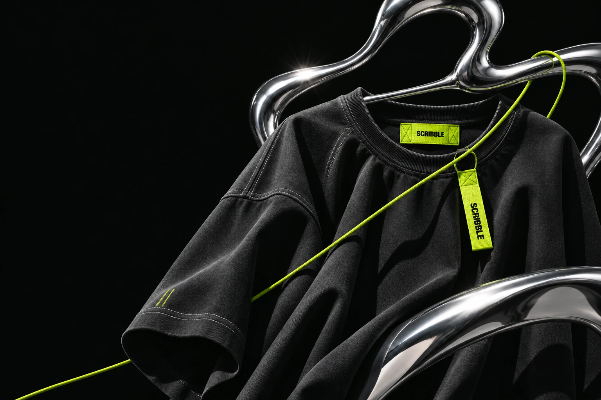

SOKAK GİYİMİ / 2026
001
001, Scribble’ın streetwear giyim markası olarak kurgulandığı ilk dünya. Markanın sokak kültüründen beslenen karakteri; tipografiden ürün sunumuna, hareketli görüntülerden mağaza deneyimine kadar bütün tasarıma yön veriyor.
Türkçe ve İngilizce hazırlanan konsept; ana sayfa, koleksiyon ve ürün sayfalarıyla bir giyim markasının dijital dünyasını keşfediyor. Bu bir tasarım projesi; görsel ve video kaynakları projenin referanslar sayfasında yer alıyor.
